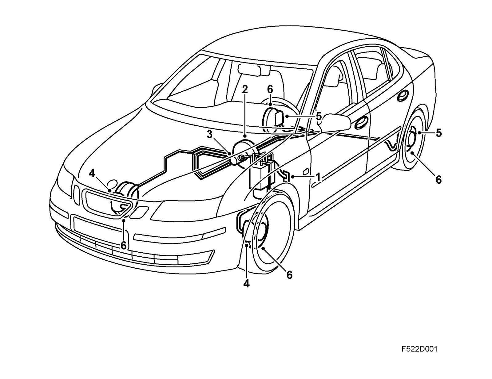
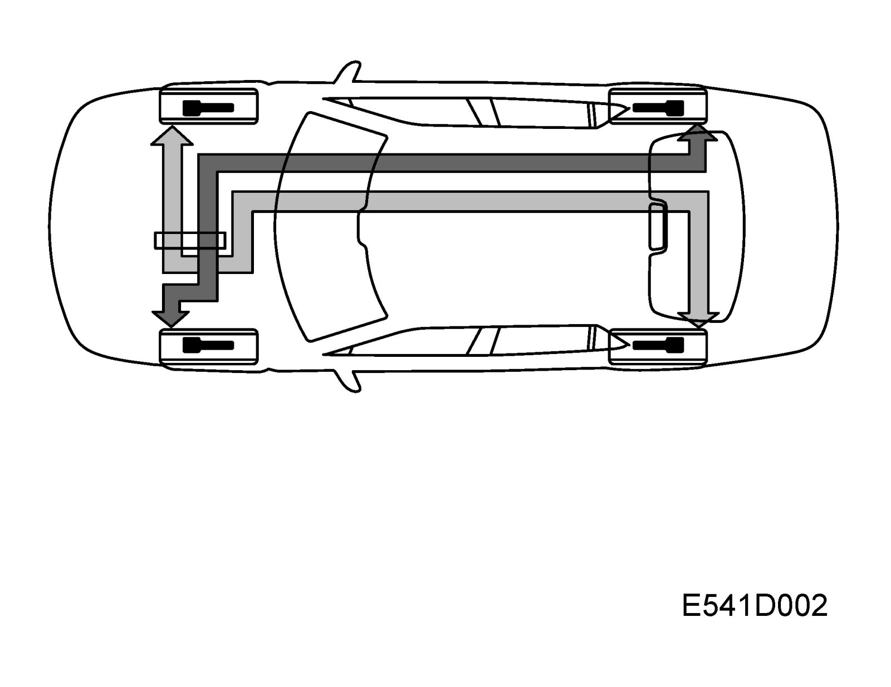
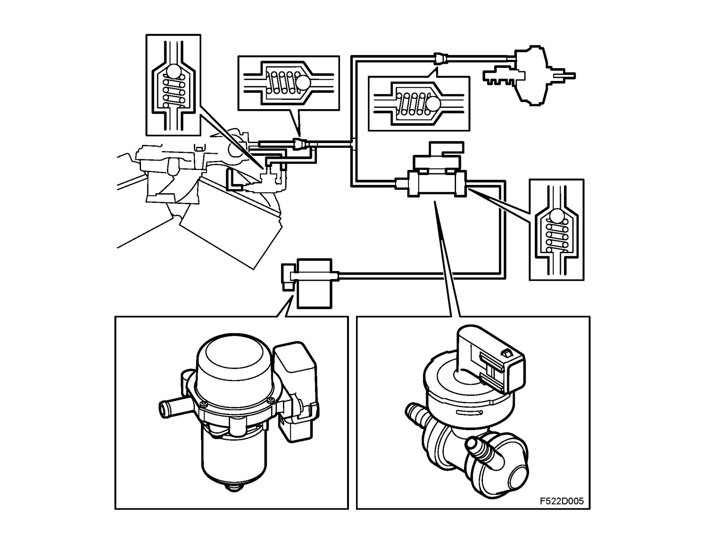
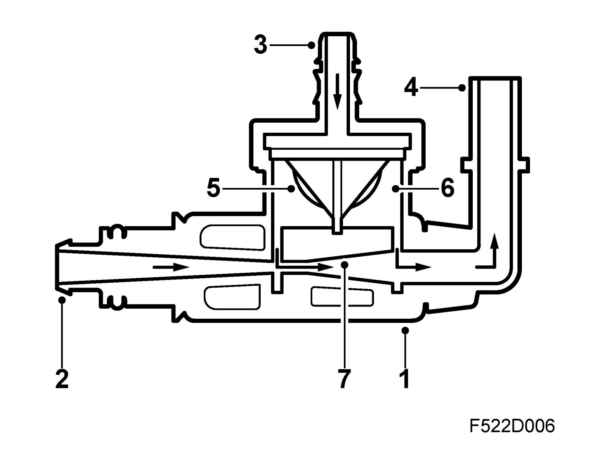
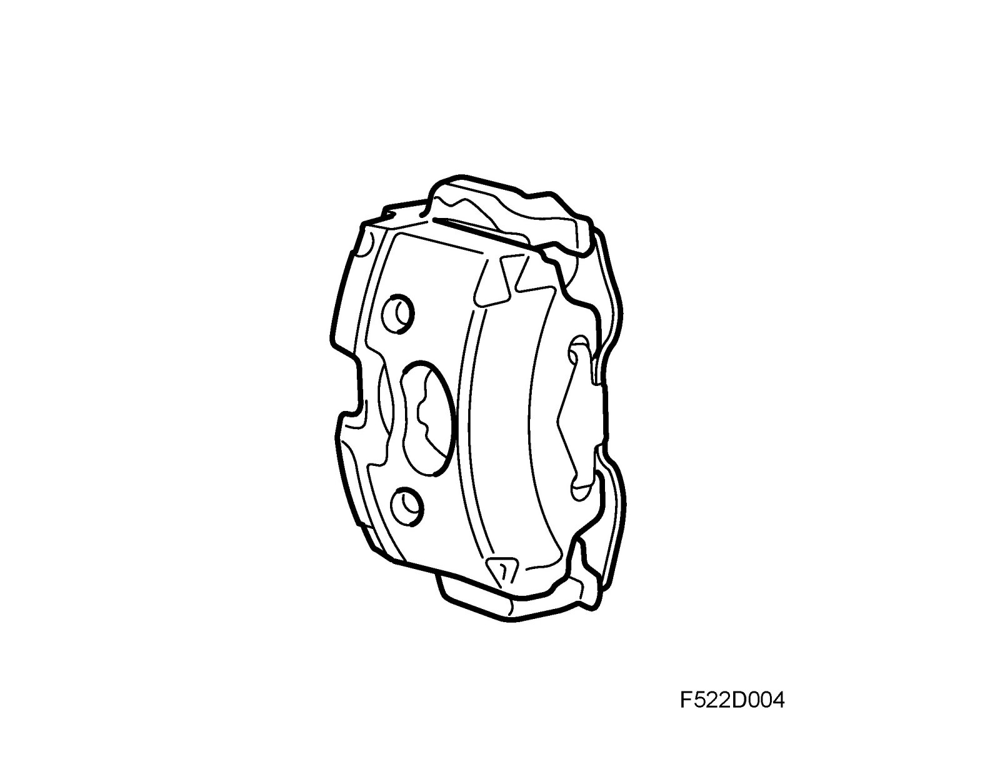

Disc Brake System: Description and Operation
Foot brakeSystem overview

1. Brake pedal
2. Servo unit
3. Master cylinder
4. Front brake caliper
5. Rear brake caliper
6. Brake disc
The foot brake system is operated with the brake pedal and acts hydraulically on all wheels. When the brake pedal (1) is pressed, it acts mechanically via the servo unit (2) on two pistons in the master cylinder (3).
The servo amplifies the outgoing pedal force and the increased pressure on the pistons in the master cylinder is conveyed simultaneously but divided into two hydraulic circuits to the front (4) and rear (5) wheel brakes. The brake calipers front and rear are self-adjusting, i.e. they continually compensate for wear in the brake pads.
Depending on the version of the braking system, the rear brake discs are either solid or ventilated. Refer also to technical data Brake discs and brake calipers and Brake pads.
Brake circuits

The brake system is divided into a primary and secondary circuit. The primary circuit comprises the left front and right rear wheel brakes while the secondary circuit comprises the right front and left rear wheel brakes. At the wheel brakes, the brake pistons are pressed out and push the brake pads against the brake discs. If a brake circuit should fail due to leakage, for instance, braking power will still be available in the other circuit.
System components
The brake servo unit boosts the pressure on the brake pedal exerted by the driver when the brakes are applied. The extra power supplied by the servo unit is obtained from the difference between the vacuum in the engine intake manifold or the vacuum pump and atmospheric pressure. In order to achieve this servo assistance in a compact design, the servo unit has dual operating chambers.
The control valve which regulates the vacuum/atmospheric pressure to the brake servo's chamber is the two-stage type, and consequently it has two ways of working. One way on the one hand is during normal braking where a certain brake assistance takes place, and the second way on the other hand is where there is increased assistance. The control valve's first stage is regulated with light to moderate pedal pressure, which results in "normal servo assistance". If the brake pedal is depressed more forcefully then the valve's first stage bottoms out and stage two comes into effect and provides increased brake servo assistance.
The servo unit is attached to the intake manifold and vacuum pump by means of a hose. The servo unit consists of a metal casing, valve unit and dual diaphragms mounted between the brake pedal and master cylinder and is connected to them by pushrods. If the supply of vacuum to the servo unit is lost, the two pushrods act as a single pushrod. The brakes will then work conventionally without servo assistance but much greater pedal force will be required.
The master brake cylinder, which is mounted on the brake servo unit, contains a secondary and primary piston. The brake fluid reservoir is fitted on the master cylinder with separate chambers for the primary and secondary circuits.
In cars with a manual gearbox, the brake fluid reservoir serves as the reservoir for brake fluid used in clutch system. A brake fluid level switch is mounted on the brake fluid reservoir. The Level switch contains a float magnet which affects a reed element that closes an electric circuit and warns the driver regarding the condition.
Vacuum pump, B207
In order to ensure that negative pressure is available to the brake servo unit, the car contains a vacuum pump. The pump provides the brake servo unit with negative pressure when the engine cannot properly accommodate the requirement.
The mechanical vacuum pump delivers maximum vacuum irrespective of engine rpm. This means that the pump, in certain situations, delivers more negative pressure than the system uses.
In a situation with an idling engine and a stationary car, the brake pedal may feel "soft" and sink somewhat lower than normal when applied. This is completely normal and will not affect braking force in a negative manner.
The ring type pump, which is lubricated by the engine lubrication system, is mounted on the engine and is driven directly by the exhaust camshaft. Since it is connected to the camshaft, the speed of the pump is half that of the engine and a negative pressure of 0.8 kPa (0.8 bar) is produced continually for the brake system.
Vacuum pump, B284
To secure the supply of vacuum in the brake servo unit under varying operating conditions, there is a vacuum pump fitted in the car. This pump supplies the brake servo unit with negative pressure when the engine is not able to provide a sufficient vacuum.

In a situation with an idling engine and a stationary car, the brake pedal may feel "soft" and sink somewhat lower than normal when applied. This is completely normal and will not affect braking force in a negative manner.
Cars with the B284 engine are fitted with an electric vacuum pump and two connections to the intake manifold. One of them has a venturi for amplifying the brake vacuum.
The electric pump is powered by +30 voltage via a relay. The relay in turn is governed by a pressure sensor located on the hose between the vacuum pump and the brake servo. This sensor comprises a diaphragm, spring, switch and check valve. The switch closes to start the pump at a pressure of 49 ±3 kPa. When the pressure reaches 42 ±3 kPa, the switch will open and the pump stop.
On the vacuum pipe between the electric vacuum pump and the brake servo unit is a T-coupling. From this T-coupling, the pipe returns to the intake manifold where it divides to two connections. On one of the pipes, connected directly to the intake manifold, there is also a check valve.

1. Venturi
2. Camshaft cover connection
3. Brake servo connection
4. Intake manifold connection
5. Check valves
6. Chamber
7. Jet
The venturi (1) has three connections. One of the venturi connections is held by barbs and is sealed with an O-ring. This is connected directly to the camshaft cover (2) on the rear cylinder bank. On the vacuum hose (4) that is connected to the intake manifold there is a check valve. The difference in pressure between the two connections provides an airflow through the jet (7).
As the inlet in the jet is tapered, the speed of the passing air will be increased to create an ejector effect that increases the negative pressure in the hose connected to the brake servo (3). To prevent air flowing in the wrong direction through the chambers (6) to the brake servo, the venturi is equipped with check valves (5).
Brake caliper
Brake caliper, front
The lightweight front brake caliper is manufactured with material which is a combination of aluminium and cast iron. The swinging caliper contains a hydraulic piston and two guide pins.

Brake caliper, rear
The rear brake calipers are produced in aluminium and are the floating type. The caliper contains a hydraulic piston and two guide pins. The caliper also contains the mechanism for parking brake and self-adjustment. The hydraulic piston's sealing gaiter is designed so that it acts to pull the hydraulic piston to the starting position. This results in reduced friction between pads and brake disc when the brakes are not being applied.